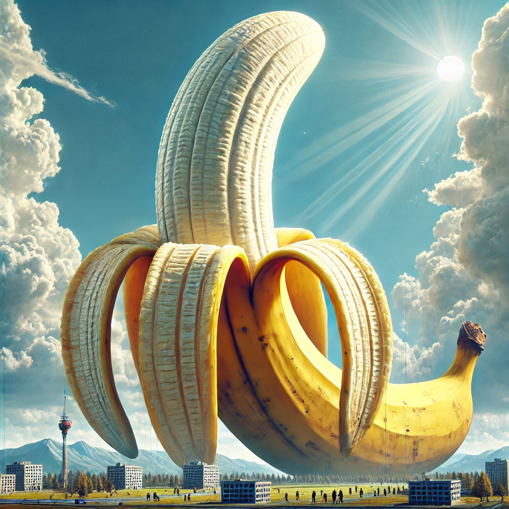

Co to jest banan?
Banan to owoc tropikalny, pochodzący z rejonów południowo-wschodniej Azji. Jest jednym z najbardziej popularnych owoców na świecie, znany z charakterystycznego żółtego koloru skórki i słodkiego smaku.
Dlaczego warto jeść banany?
- Źródło potasu: Banany są bogate w potas, który pomaga regulować ciśnienie krwi i wspiera funkcjonowanie mięśni.
- Dają energię: Dzięki naturalnym cukrom i błonnikowi banany są doskonałym źródłem energii, idealne na szybkie przekąski.
- Wspomagają trawienie: Błonnik zawarty w bananach pomaga w prawidłowym funkcjonowaniu układu pokarmowego.
Ciekawostki o bananach
- Banany rosną na roślinach, które są uważane za największe na świecie zioła, a nie drzewa!
- Istnieje ponad 1000 odmian bananów na całym świecie.
- Największym producentem bananów na świecie jest Indie.
